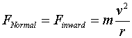

Look at the free-body diagram now and notice which force is the inward force. The Normal Force - which is the force that the road exerts on the car - is directed toward the center. So, we can very easily write this as:

Also notice that N depends on the square of the velocity and inversely on the radius of the turn. The faster you go, the greater the force exerted by the road.
Now, the key question - How fast do you have to go in order to stay "plastered" on the vertical road surface? To answer this again use the applet and look at how the Frictional Force also changes in response to the changing Normal Force. This suggests the answer to our question. The car will not skid as long as the frictional force is equal and opposite to the Weight of the vehicle.
Question
What is the equation that would relate the Frictional Force, Normal Force and Weight for the case in which the car does not skid in a vertical turn?